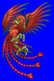
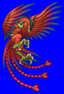
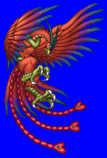
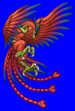

Height: ??? Weight: ???
Habitat: Lake, pond, marsh Origin: China
Meaning: "Red Sparrow"
Suzaku is the god of the birds and the south in ancient Chinese mythology. It is drawn with feathers of five mystical colors, black, white, red, green, and yellow. Much like the phoenix of other legends, it represents the heat of summer, passion, and aggression. Only royalty were able to wear this symbol, as it was very auspicious. It is said to appear to the most virtuous human only once every sixty years.
See also: White Tiger, Black Turtle, Blue Dragon, Ki-Rin